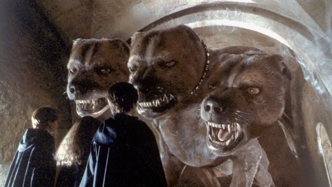

Cerberus are 3 headed dogs, mostly used as gaurd dogs in fantasy books, or movies. we were mentioned in one of the books of Harry Potter and The Sorcerers stone, or also known as the Philophers stone(The best book/movie EVER!)
